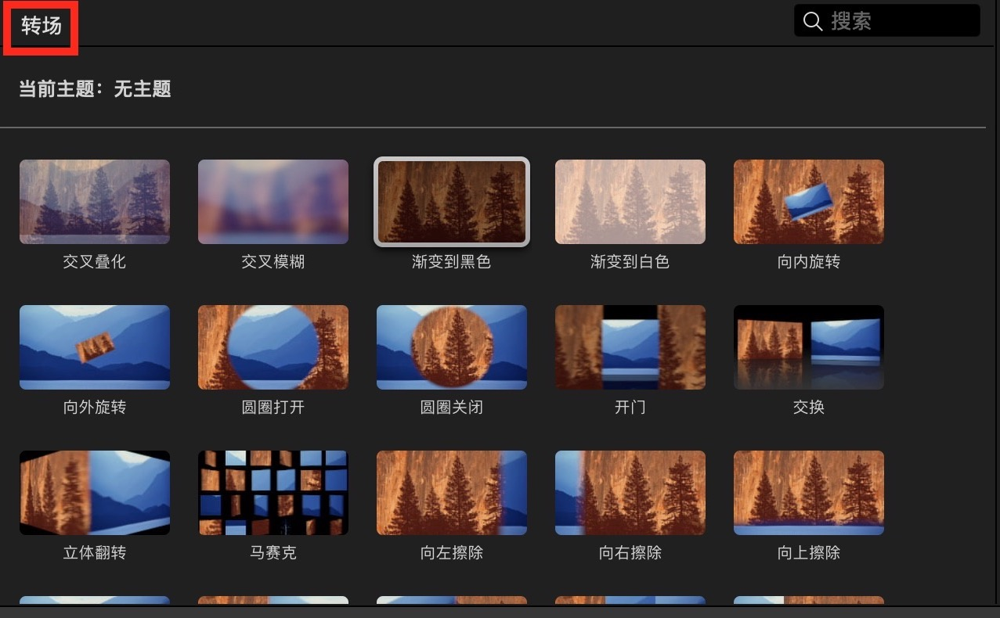
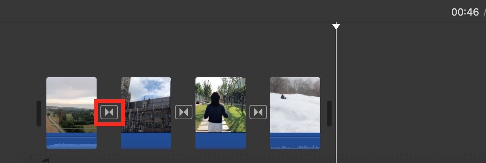

在片段之间添加转场以便平滑或混合从一个场景至另一个场景的变化。
You can add transitions between clips to smooth or blend the change from one scene to another.
在时间线中打开影片后，选取浏览器顶部的“转场”。

1）选择时间线上的一个片段，然后连按浏览器中的一个转场。
2）转场图标（见红色方框内）将出现在片段之间。
